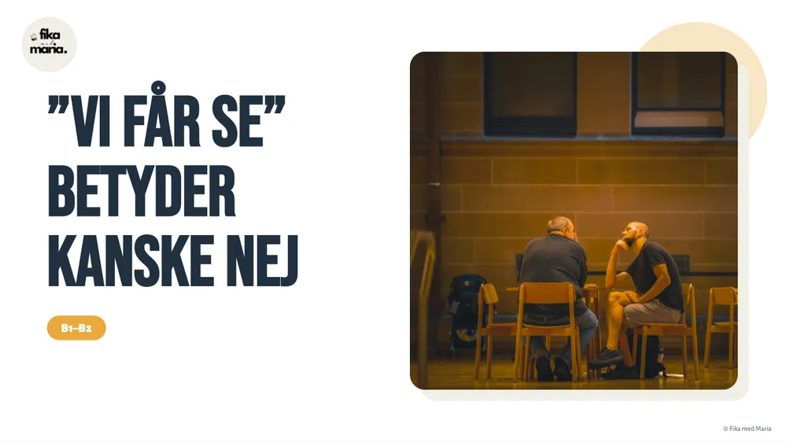

B1–B2Real spoken Swedish
”Vi får se” betyder kanske nej
Why the Swedish “Vi får se” often means “probably not” – and how to avoid going wrong when decoding evasive answers. You learn the construction det beror på + vad / om / hur / vem and find out what people really mean.
4 PDF · Canva · MiroAsk about this lesson